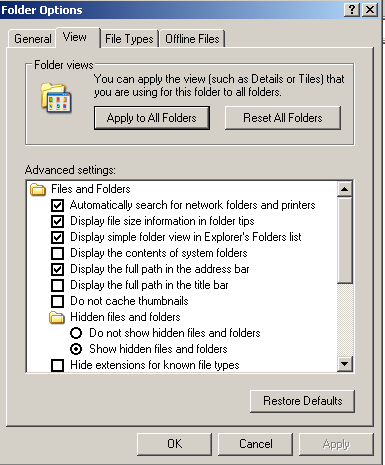
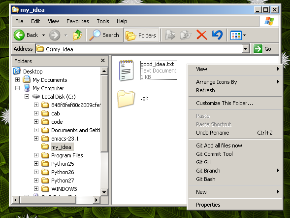
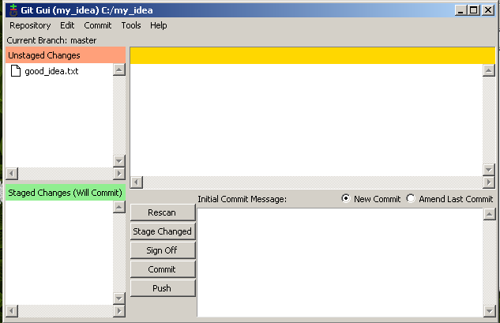
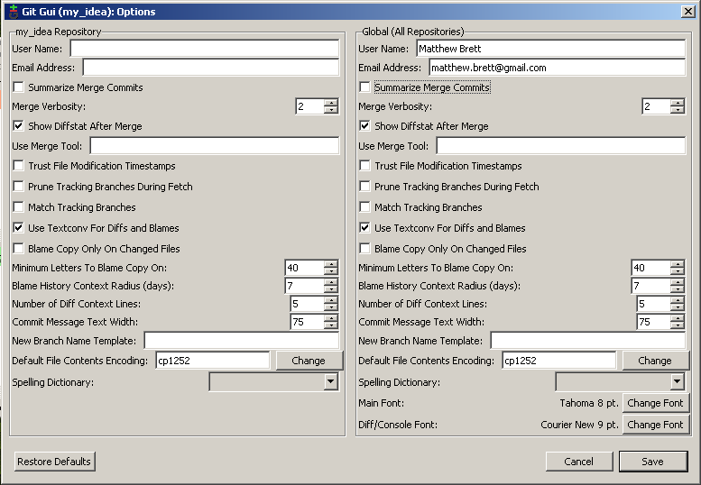
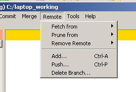
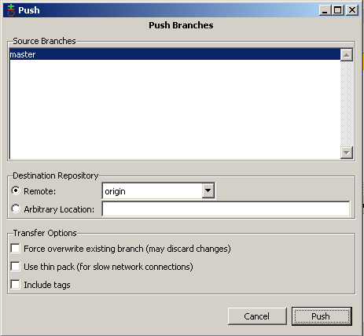
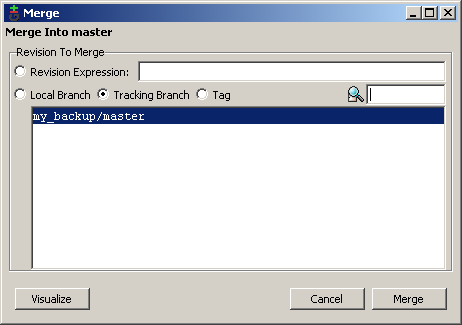

Getting started with git gui on Windows¶
Install git for Windows¶
A pretend project¶
For simplicity, let us make a folder for our project in the c:\ drive.
- Right click on the C:\ drive in Windows Explorer, select “New folder”, name my_idea
- Right click in my_idea, folder, select New file, of type “Text document”. Name it good_idea.txt.
- Open good_idea.txt and add some text like “This is my good idea”, and save.
Putting the project into version control¶
Now we have a very small project, just a folder with a single file in it. We’ll now put this folder into version control.
Initializing the repository¶
Right click in the my_idea folder, choose “Git Init Here” to initialize the git database:

You may notice that there is now a hidden folder called .git in the my_idea folder.

If you can’t see this hidden folder, you may need to change the folder viewing options. From Windows XP explorer this is the “Tools” menu, then “Options”. You should enable viewing hidden folders in the “View” tab:

Adding stuff to the repository¶
Now we have a git database in our folder, we need to add our file.
Right click in the my_idea again, choose “Git Commit Tool”
You will get a dialog like this:
Notice that our file is at the top left, and is “Unstaged”. That means that, at the moment, it is not going to be part of any “Commit” we do. A commit is where we record changes into the database. We do want to record our file, so
Either click on the little icon to the left of the good_idea.txt filename in the dialog, or go to the “Commit” menu, “Stage to commit” option. Notice the good_idea.txt file then goes to the “Staged changes (Will Commit)” section of the dialog.

Add a message in the lower right box, like The first signs of my idea. The commit message is a reminder what set of changes the commit has. It’s very useful to put meaningful messages here for quick reminders of what you intended with the changes. Now click “Commit”. Congratulations!
Speak with your own voice¶
Each commit has someone who wrote the contents of the commit - the “author”. So you can get all the blame, and all the credit, you can identify yourself to git. That way git can see who’s doing the work (or doing the damage).
Right click in “my idea”, choose “Git Gui”.
Click on the “Repository” menu and select “Visualize master’s history”:

Notice that you are ‘Author: unknown’:

Close the history window, right click and open ‘Git Gui’ again
Go to menu Edit - Options. Set your username and and email address in the Right hand panel (global options).
Save. Close.
Let’s show ourselves that I have become myself. Make a new file another_idea.txt. Start “Git Commit Tool” with a right click, stage the file by clicking on the icon next to the filename, add a message and the click commit.
Open Git history from the Git Gui, choose the “Repository” menu, “Visualize master’s history”. Notice that you have two commits now, and the second one has your name on it.
Making a backup¶
Now you have your changes backed up into your repository, but you will probably want to back up the repository somewhere.
Let’s pretend to back the repository up to a shared drive (but in fact we’ll back up to the C:\ drive).
Right click in the my_idea folder, chose “Git Gui”
Choose menu “Remote”, “Add”:

Give a name for your backup (no spaces) and a path to write the backup to. I like to add .git to the folder name for the backup, because this will be a backup with only the repository (the .git subfolder, but not the .txt files):
Select “Initialize repository and push”, then click “Add”.

If you get “Success” then your files have been backed up to this other folder.
Working from another machine¶
Now you can work from any computer and send changes back to the backup copy.
We can pretend to do this by making a new copy as if it was on (say) your laptop. But in fact we’ll create the folder in the C:\ drive again.
Right click on the C:\ drive, choose ‘Git Gui’:

Select “Clone existing repository”. For the ‘Source location’, browse to the backup that you just made. Type C:\laptop_working for the target directory. Choose “full copy” from the options (for safety). Click on “Clone”.

You now have a c:\laptop_working folder that is a clone of the “my_backup” repository, and that also has the same data as the c:\my_idea folder.
Let’s make some changes on the laptop. Go to the c:\laptop_working folder. Make a new file idea_on_laptop.txt and type some text in it. Save.
Right click, “Git Commit Tool”, stage the idea_on_laptop.txt file, add a commit message and click “Commit”.
Now you have this contents in your laptop_working folder.

You put the changes back into the backup by doing a “Push”
Right click in laptop_working. “Git Gui”, “Remote” menu, “Push ...”
On the next dialog, click “Push”.
The changes go back to the my_backup.git repository.
Getting changes from a common backup¶
Let’s pretend that we’ve gone back to our original computer and we want the changes that we pushed from the laptop.
Go back to the my_idea folder. Notice you don’t have the idea_on_laptop file yet.
Right click, “Git Gui”, “Remote” menu, “Fetch from” from the my_backup remote.

Now you have the changes in the repository (the .git subdirectory) - but not in the working tree. Specifically, we don’t have the idea_on_laptop.txt file in the folder yet:

To get the file, we need to do a merge. This brings the changes from the repository into the working tree. Open the “Git Gui” if it is not open. Choose the “Merge” menu, “Local Merge” option.

In the dialog, accept the defaults and click “Merge”:
Now you have your file - and you are synchronized with the laptop.

Review¶
- Code states stored so you can
- See what you’ve done
- Go back to an earlier state if you make a mistake
- Send files to and from different computers
- If you are working with someone else they can add their changes
- You can see what they did, they can see what you did
- It’s easy to undo if one of you makes a mistake
This system is powerful, very useful and sometimes confusing. Consult an expert if you get confused. It is fairly difficult to lose data if you ask an expert after you have made a mistake or got confused.